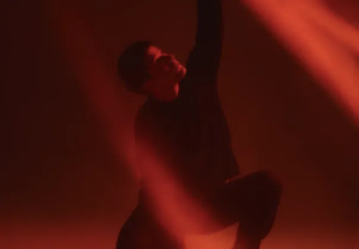
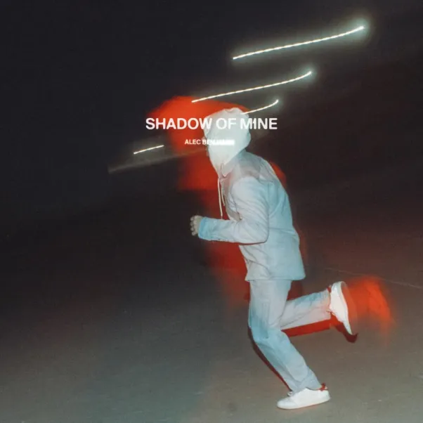

Shadow of Mine est une musique chantée par Alec Benjamin. Elle est dirigée par Gus Black et produite par Kelly Sarno et l’Agency Arts. Celle-ci est parue en 2022 et fait partie des chansons de l’album (Un)Commentary. Tout comme une grande partie des musiques du chanteur, le rythme de cette dernière est lente, presque reposant. Cela dit, le sujet dont traite ce son n’est pas forcément très optimiste et plutôt mélancolique. (Point commun à toutes les musiques de l’album en question).
Sur une mélodie donc assez posée, les paroles évoquent un individu comme poursuivi par son passé ou sa propre personne. Le personnage parle d’un « diable » qui se logerait au fin fond de son subconscient.
Cette ombre ou peut-être même cette incarnation du vice peut être considérée comme le némésis du protagoniste. Au fil de la mélodie, nous comprenons que l’ombre et le protagoniste ne sont pas séparables. Ils sont reliés l’un à l’autre comme une présumé malédiction. Le fameux voyage réservé au Texas comme évoqué au tout début de la chanson s’avère donc inutile. On ne peut pas fuir sa propre ombre. Finalement la « morale » des paroles écrites par Alec Benjamin peuvent être comprises dès le début. Le titre Shadow of Mine n’est pas anodin. Bien que le l’individu cherche à fuir son ombre, il faut accepter le fait que nous avons tous une part mauvaise en nous.
Pour pouvoir pleinement être en paix avec soi-même, assumer son passé et réussir à cohabiter avec sa propre ombre est nécessaire. Essayer de faire disparaître cette dernière peut ainsi être interprété comme un signe de lâcheté et, finalement, n’est même pas possible réellement. Pour la simple et bonne raison qu’il nous est impossible – à ce jour – de fuir qui nous sommes réellement, mais changer de manière à améliorer notre personne en revanche, est possible